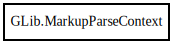

GLib.MarkupParseContext – glib-2.0 Reference Manual
Packages
glib-2.0
GLib
MarkupParseContext
MarkupParseContext
end_parse
get_element
get_element_stack
get_position
get_user_data
parse
pop
push
MarkupParseContext
Object Hierarchy:

Description:
[
Compact
]
[
Version
( since =
"2.36"
) ]
[
CCode
( ref_function =
"g_markup_parse_context_ref"
, type_id =
"G_TYPE_MARKUP_PARSE_CONTEXT"
, unref_function =
"g_markup_parse_context_unref"
) ]
public
class
MarkupParseContext
Namespace:
GLib
Package:
glib-2.0
Content:
Creation methods:
public
MarkupParseContext
(
MarkupParser
parser,
MarkupParseFlags
_flags,
void
* user_data,
DestroyNotify
? user_data_dnotify)
Methods:
public
bool
end_parse
()
throws
MarkupError
public
unowned
string
get_element
()
public
unowned
SList
<
string
>
get_element_stack
()
public
void
get_position
(
out
int
line_number,
out
int
char_number)
public
void
*
get_user_data
()
public
bool
parse
(
string
text,
ssize_t
text_len)
throws
MarkupError
public
void
*
pop
()
public
void
push
(
MarkupParser
parser,
void
* user_data)